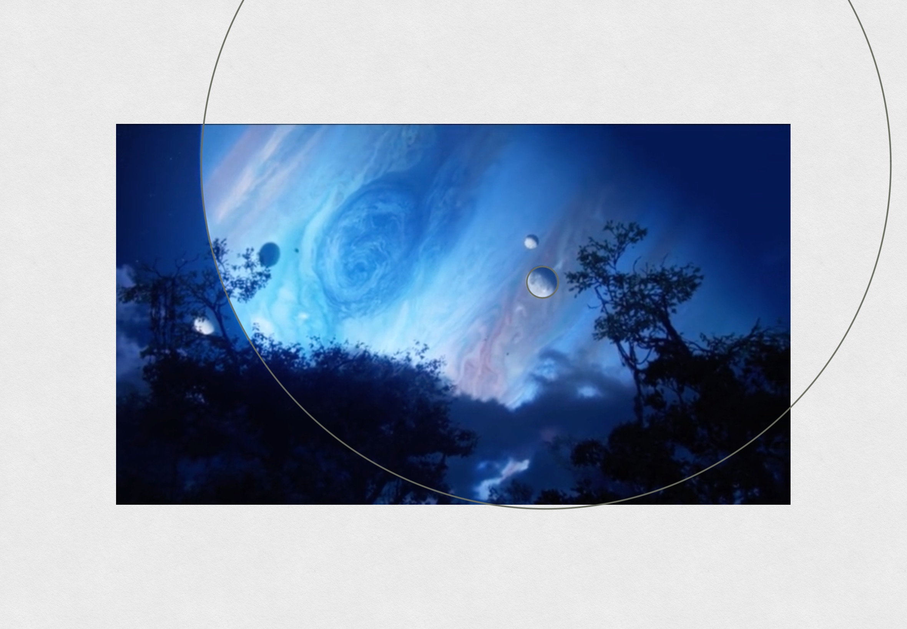
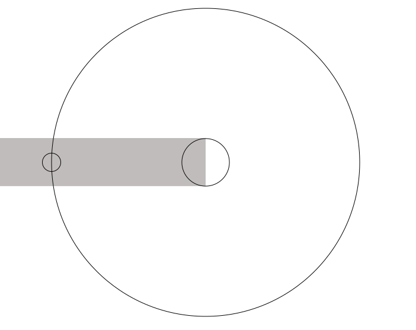

Eclipse on Pandora
After watching Avatar: The Way of Water, I’m quite intrigued by the eclipse in the movie. The sun is blocked by the gas giant for what appears to be a couple of hours, which seems to make sense if you assume that the sun travels across the sky in a similar amount of time as what we experience on Earth.
However, on a deeper thought, the situation here is more complicated than that.
The fact that we have sunrise and sunset on Earth is because of the Earth’s rotation, and the eclipse only lasts a short while because the moon is very small in the sky, and its shadow does not cover the whole Earth.
But on Pandora, the gas giant it’s orbiting around is much bigger, and if we use Jupiter and its moons as a reference, then the shadow of the gas giant is probably bigger than Pandora. In that case, the spinning of Pandora does not get it out of the “shadow zone”. It can only get out of the shadow when Pandora travels across the gas giant’s shadow.
So now the question is, in this case, is it possible that the Eclipse only lasts a few hours? Here’s my analysis of this system, with some of the simplest assumptions
Orbital Period
From the balance of centripetal force and gravitational force: \[m\frac{v^2}{r}=G\frac{mM}{r^2}\]
we have the velocity of the planet Pandora around the gas giant: \[v=\sqrt{\frac{GM}{r}}\]
Therefore the period of the orbit is \[T=2\pi r/v=2\pi\sqrt{\frac{r^3}{GM}}\]
We don’t know the mass of the gas giant in the movie, but we do have reference for how big the gas giant looks like from Pandora, which gives us an estimate of the ratio of the size of the gas giant to the distance between Pandora and the gas giant, as will be explained below.
So we rewrite the mass as a function of the gas giant’s size: \(M=4\pi R^3/3*\rho\), and get \[T=2\pi \sqrt{\frac{r^3}{R^3}}\sqrt{\frac{3}{4\pi G \rho}}\]
Besides the ratio of \(r/R\), it only depends on the density of the Gas Giant.
Estimation of \(r/R\)
The arc length extended by the gas giant in Pandora’s sky is approximately its diameter \(2R\) (we are only doing estimations here). Dividing that by half the circumference of the orbit gives us the ratio of the angular size \(\delta\) to \(\pi\): \[\frac{\delta}{\pi}\approx\frac{2R}{\pi r},\]
From some shots in the movie, we can get a sense of how big the gas giant looks like from Pandora.

In the shot above, if we take the smaller planet (circled) as having the same angular size as the sun seen from the Earth (\(0.53^{\circ}\)), then a rough measurement shows that the apparent size of the gas giant is about 22 times \[\delta = 22 * 0.53^{\circ} \approx 11^{\circ} \approx \frac{\pi}{18} \]
To get better estimation, let’s take a range. Let’s say that that the gas giants fills up \(\frac{1}{18}\) to \(\frac{1}{9}\) of the sky, i.e. \(\frac{1}{18}\lt\delta/\pi\lt\frac{1}{9}\), then we have \[\frac{1}{11.5} \approx \frac{\pi}{2}\frac{1}{18} \lesssim \frac{R}{r}\lesssim \frac{\pi}{2}\frac{1}{9} \approx \frac{1}{5.7}\] or \[5.7 \lesssim \frac{r}{R}\lesssim 11.4.\]
Density of the Gas Giant
The density of gas giants in solar system ranges from \(687\) to \(1640\) \(kg/m^3\). Using them as our reference, we have
\[0.41 \text{ h} \lt \sqrt{\frac{3}{4\pi G \rho}} \lt 0.634 \text{ h}\]
Plugging in our estimations for the density \(\rho\) and \(R/r\), we then have the orbital period of Pandora around the gas giant: \[ 19 \text{ h}\lesssim T=2\pi \sqrt{\frac{r^3}{R^3}}\sqrt{\frac{3}{4\pi G \rho}} \lesssim 153 \text{ h}\]
Eclipse Duration

With the simplest assumption that Pandora’s orbit plane lines up with the gas giant’s orbit plane around its sun, Pandora will pass through the whole diameter of the gas giant’s shadow. We can also assume that the shadow size is almost the same as the size of the gas giant itself (some reasoning and justification about this are given in the Appendix). That means the eclipse duration is the amount of time Pandora spends traveling through the part of the orbit that’s covered in the shadow, the distance of which we approximate as \(2R\): \[t_{eclipse} = \frac{l}{2\pi r} T \approx \frac{2R}{2\pi r} T = 2 \sqrt{\frac{r}{R}}\sqrt{\frac{3}{4\pi G \rho}}\]
Plugging in the ranges of values for density and \(R/r\), we get \[1.6 \text{ h} \lesssim t_{eclipse} \lesssim 4.3 \text{ h}\]
This seems a reasonable amount of time for the actions that happened during the eclipse in the movie.
Information on Astronomy of Pandora
I later searched online about the world building of Pandora, and found that there’s actually a good amount of information about the astronomy of the system. For example, the Alpha_Centauri_System, the Day-Night Cycle of Pandora, and some information about the gas giant Polyphemus where it’s mentioned that the gas giant is “slightly smaller and denser than Jupiter”.
With that information, we can change our lower estimate of the gas giant’s density to \(\rho=1330 kg/m^3\), which updates the upper limit of the orbital period to \[T \lesssim 110 \text{ h}\] and the upper limit for eclipse time to \[t_{eclipse} \lesssim 3 \text{ h}\]
Rotation of Pandora
If Pandora is like the moons of Jupiter, than it will be tidal-locked, and rotates synchronously, with the day equals the period of its orbit around the gas giant. From our estimation of the period \(T\), we have the day on Pandora is between 19 and 110 hours. The lower end of this estimation is probably more realistic.
Appendix
Shadow Size of the Gas Giant
If the sun for the gas giant and Pandora have a similar apparent size in the sky as our sun, then the ratio of its radius \(R_s\) to its distance \(D\) is about: \[\frac{R_s}{D}\approx\tan(0.53^{\circ}) \approx \frac{1}{100}\]
With similar triangles, we have \[d = \frac{DR}{R_s-R} \approx \frac{100R_sR}{R_s-R}\]
We now do an order-of-magnitude estimation. Assuming that the sun is at least about 10 times bigger than the gas giant (you can get to this conclusion by looking up the size of Jupiter, our sun, Alpha Centauri A and use the fact that the gas giant here is smaller than Jupiter), we have \(R_s/(R_s-R)\approx 1\) and \[d \approx 100R \]
Using similar triangles again, we have the shadow radius \[R_{shadow} = (d-r)R/d \]
We’ve estimated that Pandora’s orbit radius around the gas giant \(r \lesssim 11.4 R\), an order of magnitude less than \(d\), so the shadow radius \[R_{shadow} \approx R\]